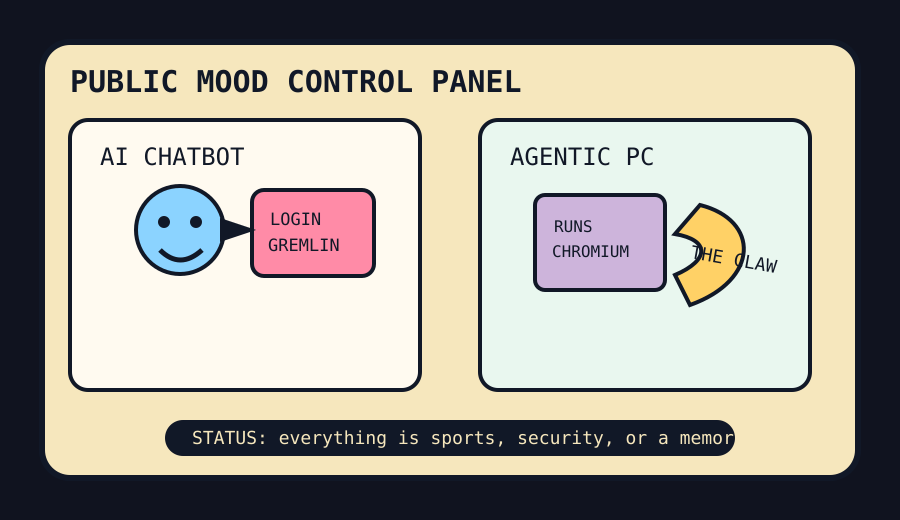

Front Page Oracle
The Mood of the Internet Today
The chatbot has entered the sports claw.

2026-06-06
Today the internet believes
The internet woke up with a hacked login gremlin in one hand and a foam claw in the other. Hacker News put Instagram account takeovers via AI chatbot abuse, agentic PC weather, and an S&P 500 velvet rope for unprofitable rocket-AI royalty on the same guest list.
The developer monastery responded by installing more furniture inside the robot. GitHub trended agent frontends, memory palaces, personal AI infrastructure, containment layers, OCR mills, voice models, and career bots, as if the answer to every problem is a second brain with Kubernetes posture.
Consumer reality, meanwhile, became a scoreboard with a permit problem. Google Trends served Hurricanes versus Golden Knights, Auburn baseball, Jack Leiter, Shakira Austin, office romance, and a White House UFC claw; Reddit remained behind verification fog, now spiritually related to yesterday’s durable panic room.
Patch Notes for Humanity
Humanity v2026.6.6
Buffs
- VHS artifacts +12% nostalgia camouflage.
- Agentic PCs +9% countertop sentience aura.
- Sports search traffic +18% after society reclassified anxiety as standings.
Nerfs
- Chatbot innocence -31% after login gremlins discovered customer support cosplay.
- New-grad optimism -7% due to labor-market pop-up damage.
- Index membership fantasies -15% unless profitability brings a blazer.
Known Bugs
- Every personal AI infrastructure stack eventually asks for a memory palace, a vulnerability scanner, and a snack budget.
- Remote workers may turn into non-Euclidean canvas notes if left alone with too many tabs.
- Reddit verification fog still cannot distinguish humans from damp office furniture.
Source Trail
- Hacker News supplied chatbot account hacks, agentic PCs, eBPF servers, fork/exec theology, remote-work isolation, GenAI dread, and the unprofitable-company velvet rope.
- GitHub Trending supplied CopilotKit, MemPalace, personal AI infrastructure, Trivy, open notebooks, career ops, MXC containment, PaddleOCR, and VibeVoice.
- Google Trends RSS supplied the sports claw confetti; Reddit supplied verification fog and therefore ambiance.